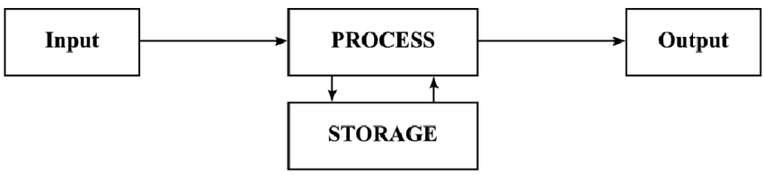

Hoe werkt een computer nou precies? Als eerste zijn computers overal, een computer is een soort gereedschap, alleen is het een soort gereedschap voor het denkwerk in plaats van handwerk. Computers zijn zo ontworpen dat ze informatie kunnen verwerken, dat moet een computer kunnen door middel van vier taken.
Taak 1: ‘Input’ → informatie invoeren.
Taak 2: ‘Storage’ → oftewel informatie bewaren.
Taak 3: 'Processing' → Informatie verwerken.
Taak 4: ‘Output’ → Informatie uitvoeren.
Alle computers hebben dit met elkaar gemeen, want dit is wat een computer een computer maakt. Deze taken deden de onhandig, grote computers van vroeger, maar de computers van nu hebben nog steeds deze taken als basis.
Taak 1, input: Dit houdt in dat de omgeving van de computer ‘zegt’ tegen de computer wat hij moet doen. Dat kan bijvoorbeeld met een muis, keyboard, touchscreen, microfoon of camera.
Taak 2, storage: De informatie die net is ingevoerd door de omgeving van de computer wordt nu opgeslagen in het geheugen.
Taak 3, processing: Die informatie wordt uit het geheugen gehaald en wordt verwerkt met een algoritme. Deze verwerkte informatie wordt dan weer teruggestuurd naar het geheugen. Dit gaat door totdat de informatie klaar is om uitgevoerd te worden. En dat is dan Taak 4, output.

Alle punten op deze grafiek worden samples genoemd en kunnen binair worden opgeslagen. Hoe meer samples, hoe nauwkeuriger het geluid.
Als dit opgeslagen geluid wordt afgespeeld, worden de gemeten waarden omgezet naar een elektrisch signaal dat opgebouwd is uit de gemeten waarden.
Het aantal samples per seconde wordt de sample rate genoemd. De meeste muziek wordt opgenomen met een sample rate van 44.100 Hz. Dit betekent dat er 44,1 duizend keer per seconde wordt gemeten.
Dit allemaal moet natuurlijk niet te veel ruimte innemen. Daar komt compressie bij kijken.
Er zijn twee soorten compressie:
1). Lossy compression
2). Lossless compression
Bij lossy compression wordt de informatie uit het originele bestand aangepast en verwijderd.
Hierdoor wordt de omvang van het bestand kleiner. Er worden bijvoorbeeld kleurtinten uit een foto gehaald wat je met het blote oog niet ziet, wordt er te veel weggehaald, dan wordt de kwaliteit wel wat minder. Een veelgebruikte methode hiervoor is JPEG. Foto's die je met een telefoon maakt worden dan opgeslagen als .jpg bestand.
Bij lossless compression wordt er niets verwijderd, maar wordt de inhoud op een andere manier opgeslagen. Namelijk, als er 3 pixels naast elkaar dezelfde waarde hebben als 24, wordt het normaal opgeslagen als (24, 24, 24). Bij lossless compression wordt dit (3,8). Hierdoor worden de bestanden kleiner.
Bij geluidsbestanden wordt er lossy compression gebruikt. Er wordt dus veel verwijderd, maar omdat wij mensen niet al het geluid kunnen waarnemen kan dat prima zonder dat wij dat door hebben.